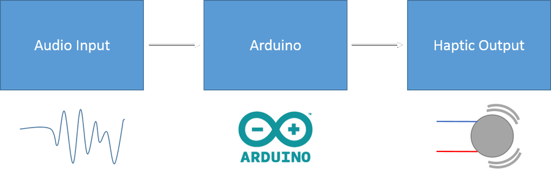

Arduino Haptic Feedback Chromatic Tuner
This TED talk on sensory substitution, a love of music, and my desire to learn about microcontrollers and electronics was what inspired me to start this project. The basic concept: a musical tuner with a twist, one that will allow you to "feel" if the note your are playing/singing is in tune. Music tuners are tools that help musicians make sure their instrument/voice is within an acceptable range of a desired pitch i.e. "in tune". Typical portable tuners use LEDs and digital screens to let people see the result but the TED talk had me thinking it would be neat if you could instead feel it using something like Dr. Eagleman's vest of vibration motors.
August 28, 2016: Prototype On Breadboard
The prototype takes audio in from an electret microphone and amplifies it for the Arduino using an op-amp pre-amplifier. The Arduino calculates a frequency value from the audio signal and compares that to an equal-tempered scale to determine if the note is in tune or not. Then the Arduino vibrates one of five motors accordingly.